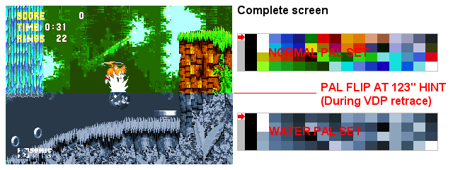

Pic f - Boost color tips 2 : Raster Effect !
Using the H counter or Hint, you can know (software) which line is currently drawn by the VDP.
So if you reload a palette at Hint number 10, the next part of the screen (after line 10) will be assigned with the new palette.
But, you need to perform these operations very quickly (because the 68k has only 16 cycles until the horizontal retrace is finished and the new line starts to draw).
Note: This raster effect can also be done with H & V scrolls (to make some distorsions/scrolls).
